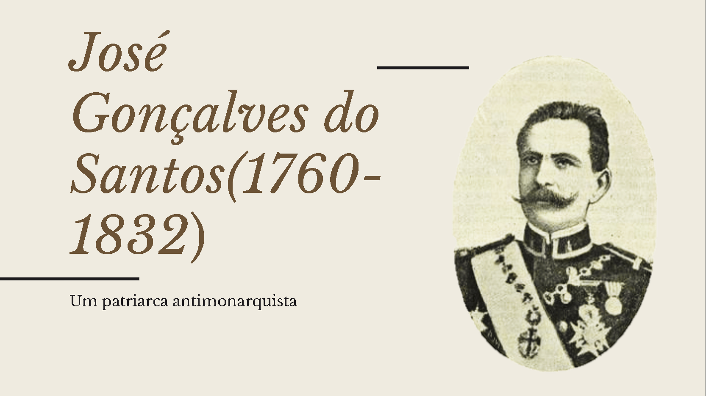

Escolhas do Aluno
Atividade Partido Político
Objetivo: realizar a pesquisa de um partido existente atualmente no Brasil com tópicos passados pelos professores e construir um novo partido fictício.

Atividade Trimestral - Personagem
Objetivo: Criar uma Personalidade Fictícia que tenha vivido no Brasil Colonial, sua Vida e Obra.

Ver Canva